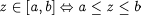
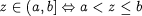
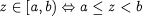
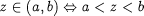

As with lumped models, Distributed Variables in Models are related through sets of equations that are declared in the Equation section. For example, consider the following declarations within a Model of a tubular reactor:
# MODEL TubularReactor PARAMETER # Geometrical parameters ReactorRadius, ReactorLength AS REAL # Heat transfer parameters U, S AS REAL ... DISTRIBUTION_DOMAIN Axial AS [ 0 : ReactorLength ] Radial AS [ 0 : ReactorRadius ] VARIABLES Vz, Vr AS DISTRIBUTION (Axial, Radial) OF Velocity T AS DISTRIBUTION (Axial, Radial) OF Temperature Twall AS DISTRIBUTION (Axial) OF Temperature Tc AS Temperature
In this case, Vz * T is a valid expression that is distributed over the entire Axial and
Radial domains. Similarly,
U * S * ( T(,ReactorRadius) - Tc )
is also a valid expression distributed over the entire Axial domain. In some cases, it may be desired to define an
expression over part of a particular domain. This can be achieved by using slices of distributions, very
similar to the slice concept for arrays. For example, the expression:
Vz(0:ReactorLength/2, ) * T(0:ReactorLength/2, )
is distributed over the first half of the Axial domain and the entire Radial domain. The
mathematical modelling of distributed systems often requires a rather subtle distinction between the entire domain including
its boundaries, and the domain excluding all or part of its boundaries. In standard mathematical terminology, these two kinds
of domain are referred to as 'closed' and 'open' respectively. One major reason for introducing this distinction is that some of the equations
(e.g. conservation laws) may hold only in the interior of a domain while being replaced by appropriate boundary
conditions on the domain boundaries. To allow the modellers to make the above distinction, gPROMS employs the notation shown in the table
below.
| Mathematical notation | Interpretation | gPROMS notation |
|---|---|---|
| [a,b] |  | a : b
|
| (a,b] |  | a|+ : b
|
| [a,b) |  | a : b|-
|
| (a,b) |  | a|+ : b|-
|
Thus, the Variable slice Vz(0|+:ReactorLength, 0|+:ReactorRadius|-) denotes the values Vz(z,r)
for the values of z and r satisfying 0 < z <= ReactorLength and 0 < r
< ReactorRadius. We conclude by formally defining the validity of expressions involving distributed Variables.
Consider an expression x ? y where x and y are scalar or distributed expressions, and ? is a binary
arithmetic operator (+, -, *, /,
^). Then this is a valid gPROMS expression if and only if it conforms to one of the four cases listed below:
| Case | x
|
y
|
Dimensionality of x ? y | Interpretation of x ? y |
|---|---|---|---|---|
| 1. | Scalar | Scalar | Scalar | x ? y |
| 2. | Array | Scalar | Same as x |
x_{...} ? y |
| 3. | Scalar | Distribution | Same as y |
x ? y_{...} |
| 4. | Distribution | Distribution | Same as xandy |
x_{...} ? y_{...} |
Clearly, case 4 is valid only if both x and y are distributed over exactly the same domains, also taking account of whether each of these is open or closed. For example, the following is a valid expression:
Vz(0|+:ReactorLength,ReactorRadius|-) * Twall(0|+:ReactorLength)
that is distributed over the Axial domain which is open on (i.e does not include) the left boundary
(z=0) but closed on (i.e includes) the right boundary
(z=ReactorLength). On the other hand, the expression:
Vz(0|+:ReactorLength,ReactorRadius) * T(0:ReactorLength,ReactorRadius)
is invalid because the first operand Vz is distributed over a domain that is open
on the left and closed on the right, while the second operand T is distributed over a domain that is closed on both
ends.